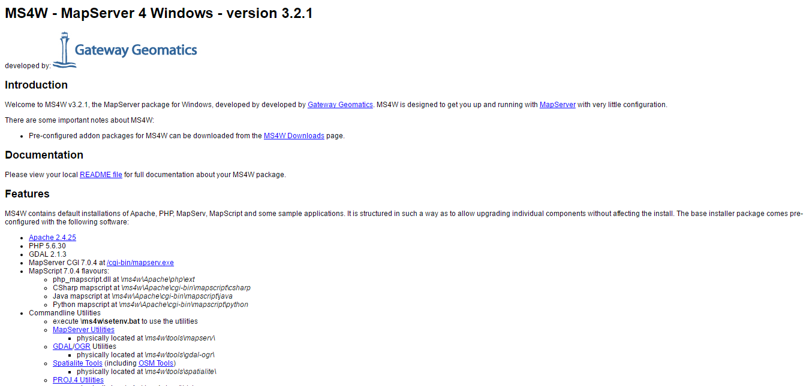

Note
| Fecha | Autores |
|---|---|
| 14 Febrero 2017 |
|
©2017 Wladimir Szczerban
Excepto donde quede reflejado de otra manera, la presente documentación se halla bajo licencia: Creative Commons (Creative Commons - Attribution - Share Alike: http://creativecommons.org/licenses/by-sa/3.0/deed.es)
El MapServer es multiplataforma y tiene distribuciones para Windows, Linux i Mac OS X, en caso de no encontrar una distribución se puede instalar haciendo una compilación específica. Para la descargar el MapServer ir a http://mapserver.org/download.html
En esta caso utilizaremos la distribución MapServer for Windows MS4W http://ms4w.com/. MS4W es un paquete completo de Servidor Web, MapServer, MapScript (PHP, C#, Python, Java) y las dlls adicionales para soporte de Oracle. También están disponibles varias aplicaciones Web populares las cuales están preconfiguradas para MS4W.
En la página principal de MS4W descargaremos el último instalador ms4w-3.2.1-setup.exe
El paquete básico de MS4W (versión 3.2.1) contiene:
Adicionalmente tiene paquetes de instalación de otras aplicaciones como: Mapbender, GeoMOOSE, OpenLayers entre otros.
Una vez descargado en instalador lo ejecutamos y aceptamos las opciones por defecto que nos nuestra el asistente de instalación.
Note
Si ya tenemos instalado algún servidor web u otra aplicación que utilice el puerto 80 tendremos que indicar algún otro puerto. Por ejemplo el 81.
Al finalizar la instalación comprobamos que se ha realizado correctamente, para ellos abrimos un navegador y escribimos:
http://localhost
ó en caso de haber cambiado el puerto durante la instalación.
http://localhost:81
Si se ha instalado correctamente debemos ver en nuestro navegador la siguiente página
|  |
Luego comprobamos que el MapsServer se está ejecutando correctamente escribiendo en el navegador:
http://localhost/cgi-bin/mapserv.exe
Debe aparece el siguiente mensaje de MapServer:
No query information to decode. QUERY_STRING is set, but empty.